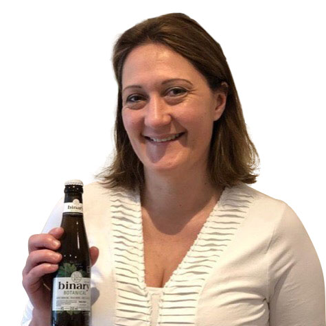

“Kaye is passionate about all things food and drink related and takes the time to promote and coach small businesses as they navigate the various social media platforms in a very structured and professional way. Much appreciated!”
Danielle Bekker, Supply Chain and Innovation Consultant.
“Kaye recently helped me to publicise a major consumer event (Love Wine Festival, Guildford). The social media support was invaluable in spreading the word about the event and she was very supportive and proactive."
Heather Dougherty, wine educator and writer, UK Champagne Ambassador 2018, certified Rioja and Rhone educator.
“Kaye recently ran a well-structured and equally well organised social media Q&A event with me. She has deep knowledge of the format and supporting technology that facilitated this interaction, and was very supportive with her advice and guidance to ensure the event went smoothly. Thanks and look forward to the next opportunity to work together!”
Harp Mann, Bid Director, EMEA Strategic Sales Centre, HP Enterprise Services.
“A delightful, regularly updated feed of wine delights was shared by Kaye. At 'Glass of Bubbly' we understand the power of social media in driving target traffic to capture website and Kaye thinks along these lines. Her enthusiasm landed her a judging spot at our annual global awards based on her social media influencer position. Nice working with you!”
Christoper Walkey, founder of Glass of Bubbly.